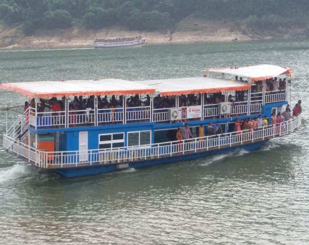

<div class="container-fluid one">
    <div class="row">
        <div class="col-xs-12 col-sm-12 col-md-12 col-lg-12">

            <h1>Rajahmundry To Papikondalu 1 Day Tour Package</h1>
            
            <h6>Punnami A/c Boat</h6>
            
            <div class="price">
                <h3>Adult : Rs.1200/-(A/C)</h3>
                <h3>Child  : Rs.1000/- (A/C)</h3>
                <h3>Child Age limit : 5 to 10 Years</h3>

                <h4>Reporting Place:</h4>
                <h5>Punnami Tours & Travels
                    Time: 7.00 AM, Near Titan Watch Showroom, Godavari Bund Road, Rajahmundry.</h5>
            </div>

            <div class="schedule">

                <h2>Tour Schedule:</h2>
                <p>Papikondalu are three in number situated  like a wall in the midst of holy river Godavari, nearly
                    100 KM far from Rajahmundry. Every Tourist visited Papikondalu on luxury cruise have enjoyed
                    scenic beauty.</p>

                    <h5>Places covered : Gandipochamma Temple, Papikondalu, Perantapalli Ashramam and Temple.</h5>
                     <h5>View on Boat : Polavaram Project Area, Devipatnam, Koruturu Cottages, Kolluru Bamboo huts.</h5>
                    <h5>Package Includes : Break fast, Vegetarian Lunch with mineral water.</h5>

                    <p>7:30 AM Road journey to  Polavaram revu/ Purushothapatnam revu to check in Boat</p>
                    <p>9:00 AM Breakfast in the Boat, then journey starts on Holy River Godavari</p>
                    <p>10.30 AM Reach GandiPochamma Temple and darshan.</p>
                    <p>1.00 PM Vegetarian lunch in the Boat while</p>
                    <p>2.00 PM Reach Papikondalu, journey in between "Papikondalu" enjoy the scenic beauty</p>
                    <p>3.00 PM Reaches Perantapalli village of Khammam district Visit "Ramakrishna muni vatika"
                        (Ashramam) and Veereswara Swamy Temple and darshan of god Shiva.</p>
                    <p>3.30 PM Return journey by Boat to Pattiseema revu /Polavaram revu /Purushothapatnam revu</p>
                    <p>7.30 PM Road journey to Rajahmundry, 8.30 PM Reach Rajahmundry.</p>

                    <button class="btn btn-primary" routerLink='/Booknow'>Book Now</button>


                </div>


        </div>
            </div>
            </div>
            